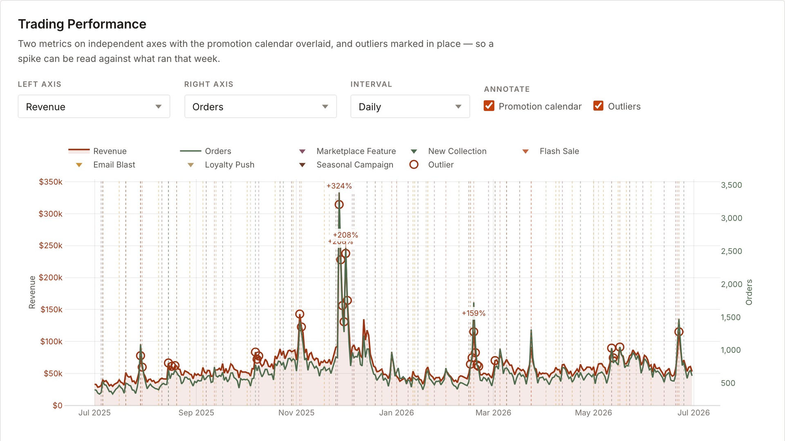
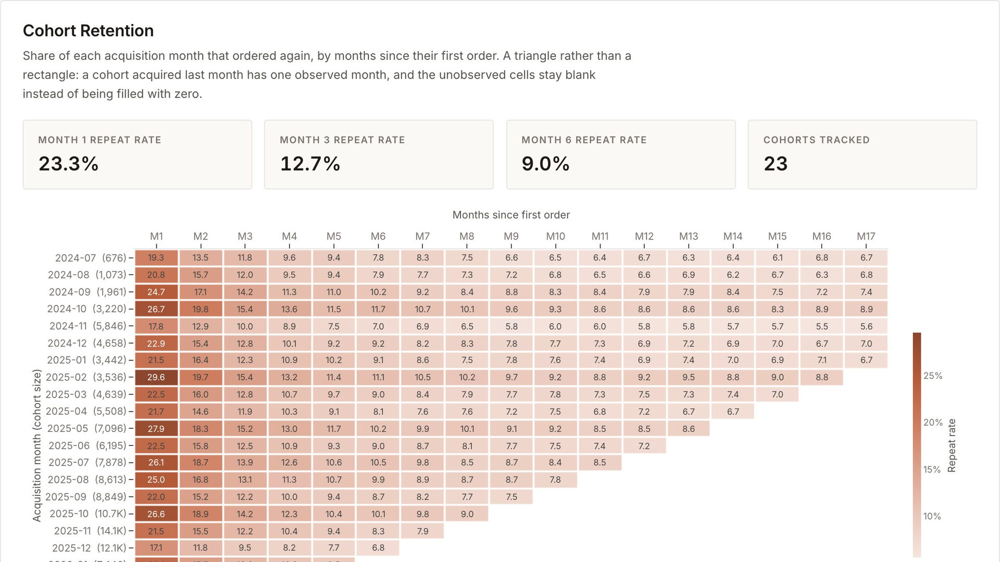
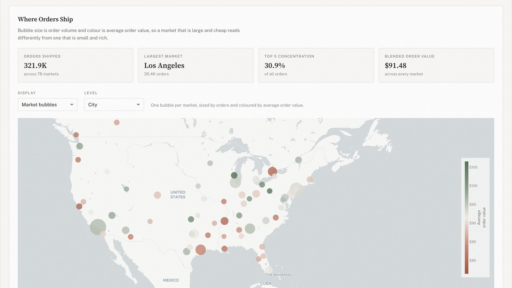

Trading performance — revenue and orders on independent axes, the promotion calendar overlaid, outliers called out in place.Featured system
PRODUCT ANALYTICS / DATA VISUALIZATION
Tidepool Commerce Analytics
Live Retail Dashboard
A multi-brand direct-to-consumer analytics surface, owned end to end — dataset, analysis, chart craft and front end. Nine views run from sales performance to fulfillment, each built around an operating decision rather than around a metric.
Evidence
- End-to-end ownership — dataset, analysis, chart craft, front end
- Nine views across trading, customers, marketing and operations
- Cohort retention, RFM segmentation, driver decomposition, event studies
- Two independent front ends, one dataset, agreeing to the last digit

